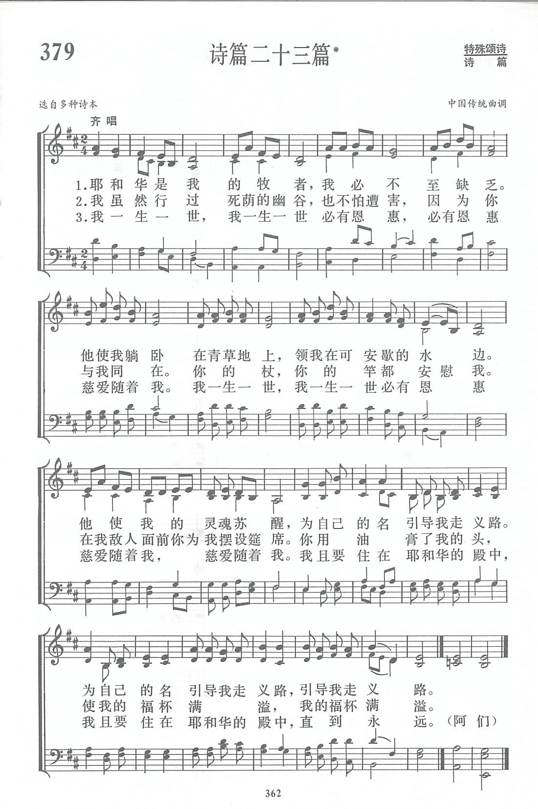

|
|
【耶和華是我牧者】 |
|
|
耶和華是我牧者，我必不至缺乏， |
|
https://www.zanmeishige.com/tab/14052.html?songbook=1&index=379

|
|
|
|
|

https://youtu.be/Cg4gxdwagR4 https://www.youtube.com/watch?v=x2rEdbZQWe0 -
青年聖歌_耶和華是我的牧者 https://youtu.be/tlzWMN9VFRw
第379首 诗篇二十三篇 _苏佐扬 PSALM 23
经文：“耶和华是我的牧者，我必不至至缺乏”(诗23：1)。
这首诗是采用我国传统曲调唱颂旧约散文诗篇，获得成功的一例。因它是我国自城市到农村最普遍熟悉的一首。不仅是因为这篇诗篇的内容许多信徒都能背诵，也因为它的曲调通俗易唱，令人百唱不厌。文化大革命后，编者访问各地教会时，发现几乎各地信徒都会背唱这首诗。
编曲者苏佐扬牧师1916年出生于香港，是第三代基督徒，他的外祖父是广东省一位热心长老。1934年春他入山东华北神学院求学，1937年毕业后至1948年间，在华北、华南、西南、西北共19个省内布道。以后移居香港，自1951年起开始向海外布道，到过数十个国家和地区，并创办天人神学院、天人出版社等，出版书籍多种。
苏佐扬14岁学会弹风琴后，又陆续学会吹喇叭、弹八弦琴、四弦琴、吉他、小提琴、木琴等多种乐器。他少年时期已开始创作圣歌，在神学院时被采用为唱诗班的诗歌。
1937年夏，他与华北神学院的陈恩福等三位同学，在校内共同创办《天人社》，工作之一即写经文短歌，使同学便于背诵经文，同年出版《天人短歌》简谱本81首，在抗战时期流传较广。《新编》附录內的短歌《大山可以挪开》、《神啊求你鉴察我》便是他的早期作品。自那以后，他经常写赞美诗及经文短歌。他写作不是在办公室内，往往是在出外布道的途中，随时创作，收获甚丰。编著有《天人圣歌2 5 O首》、《天人短歌5 O O首》，其中有的诗歌被译为多种文字，转载使用。
据苏佐扬牧师回忆，这首诗篇以及第121、133、150篇的曲调(《新编》第382、383、384首)都是1934年他在华北神学院就读时，在每天清早5时半的早祷会和8时的礼拜中，听同学们唱的。因无琴谱，他仔细聆听后记下曲谱，配上和声，以便弹奏。
有时同学们唱的旋律也不一致，便由他大胆加以整理，以后编入了《天人短歌》。
耶和華是我的牧者 The Lord Is My Shepherd -Montgomery
耶和華是我的牧者，我必不至缺乏，
祂使我躺臥在青草地上，領我在可安歇的水邊，
祂使我的靈魂甦醒，為自己的名引導我走義路，
為自己的名引導我走義路，引導我走義路。
我雖然行過死蔭的幽谷，也不怕遭害，
因為祢與我同在，祢的杖，祢的竿，都安慰我，
在我敵人面前，祢為我擺設筵席，
祢用油膏了我的頭，使我的福杯滿溢，我的福杯滿溢。
我一生一世 我一生一世 必有恩惠慈愛隨著我〈2x〉，
我且要住在耶和華的殿中〈2x〉，直到永遠。
（亦可在『YouTube 』上聆聽此歌）
 (請點耳機收聽)
(請點耳機收聽)
幾乎每一個基督徒都會背詩篇廿三篇，我也自幼就熟背，但一直沒有刻意去思想這一段經文。 最近我不慎摔了一跤，才真正體會到杖竿的重要。
沒有它我無法站起來，沒有它我無法行走。 我們走天路行程，也經常會失足跌倒，但有主的杖和竿，可以再站起來，靠著它繼續前行。
這首聖詩有許多曲調，我們最熟悉的有三首。 最早這首詩是根據1650年蘇格蘭詩篇，1822年經蘇格蘭詩人蒙哥馬利（James Montgomery, 1771-
1854, 見一月十二日）改寫，由奧國男低音歌唱家高沙特（Thomas
Koschat, 1845-1914）譜曲。
另一曲調因被英女皇依利莎白二世結婚時選用而流行，何人作曲，曾起爭議。在1911年以前，都以為是蘇格蘭商人葛大偉（David
Grant）所作；但有一位蘇格蘭牧師的女兒歐文茜（Jessie Seymour
Irvine,1836-1887）宣稱她是該曲的原作者，在1871年交給葛大偉配作和聲。雙方都無確據。 自1929年起，眾咸認歐文茜是作曲者。
中國信徒則喜歡唱配有中國古調的一首，該曲經馬革順（Ma Ge-shun, 1914-2015 ）教授配上和聲，古意盎然，別有風格。
馬革順出生於南京一個基督教家庭，畢業于南京中央大學音樂系，1947年，赴美國深造，專攻聖樂及合唱指揮。
回國後，曾任中華浸信會神學院音樂系主任，嗣後任教于華東師範學院及上海音樂院。 他是國際合唱學會會員，美國華特堡音樂院授予藝術業榮譽博士學位。
1954年，他根據路加福音1:46「馬利亞說，我心尊主為大。」寫了聖樂合唱曲的「受膏者」，全曲共十二首，又將其中的一首獨唱曲 「我心尊主為大」改編為會眾唱詩。
1981年，中國基督教聖詩委員會成立，他被邀請為顧問，他對新創作的選定與修改盡力不少。
退休後，他致力于培養教會音樂人才，雖已八十高齡，指揮時仍精神飽滿，一絲不苟，要求嚴格，他以身作則的精神感動團員。他常說：「能與教會內有奉獻心志的唱詩班同工，是我最大的幸福。」他屢次赴美國及東南亞各地講學並促進聖樂事工。
另有一首 「我是主羊」（His Sheep Am
I）也是根据詩篇廿三篇，是兒童詩班最愛唱的詩歌，尤其是男女混聲 踏步輪唱，活潑有力，動人心弦。
我是主羊
His
Sheep Am I
主領我到青草地，安歇在溪水旁；
黃昏時主與我一路同行，
牧場上凡是屬於主的羊都強壯，
我是主羊。
青草地，死蔭幽谷，
溪水旁，高山峻嶺，
黃昏時，有主與我同行。
黑暗夜，死蔭幽谷，
路崎嶇，高山峻嶺，
一步一步隨主行。
(請點耳機收聽)
中英文聖詩集參考
英文歌名 Higher
Ground
頌主新歌(中英文雙語本) 81
教會聖詩 24
生命聖詩 312
新聖詩 7
歡欣讚美 694
聖徒詩集 470
聖詩 171
讚美 188
恩頌聖歌 343
世紀讚頌 65
讚美詩(新編) 379
青年聖歌I 164
青年聖歌II 172
校園詩歌I 51
英文歌名 His
Sheep Am I
教會聖詩 404
註：「歡欣讚美」詩集為英文版，原名是
Celebration Hymnal．
http://www.hymncompanions.org/Jan/25/stream.php